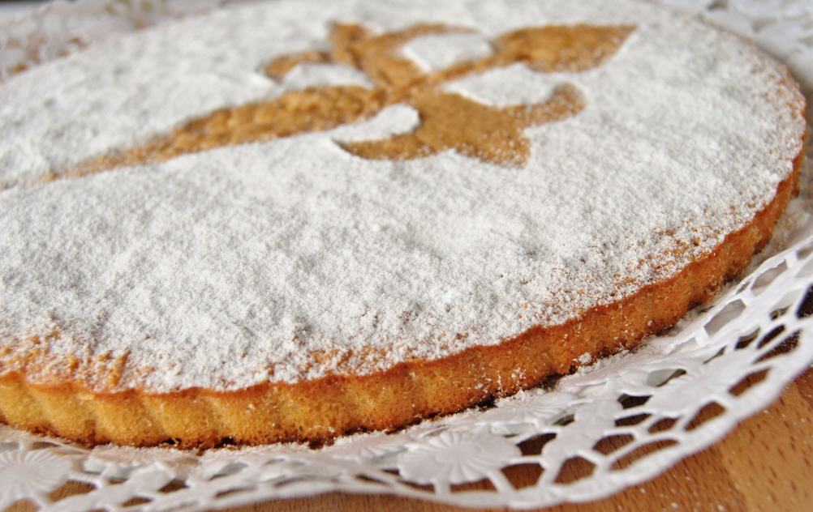
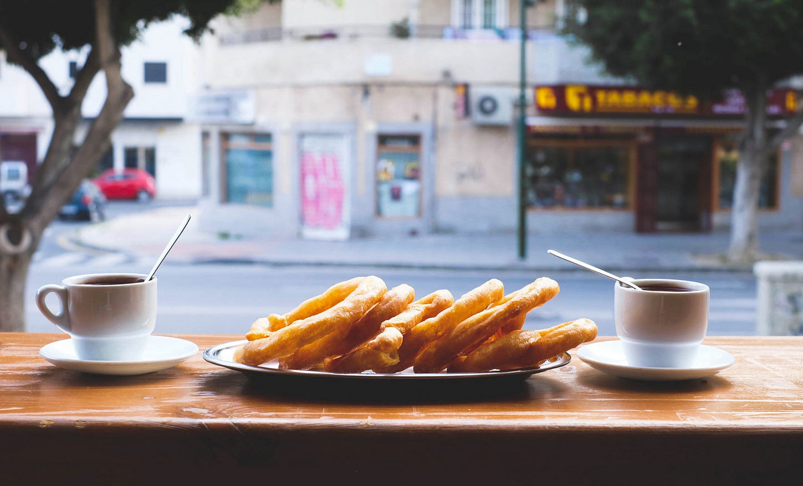
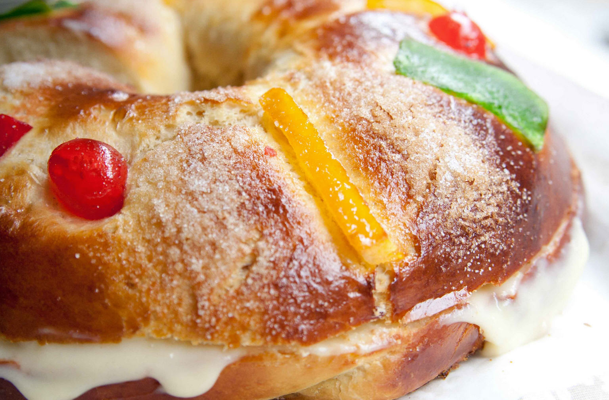
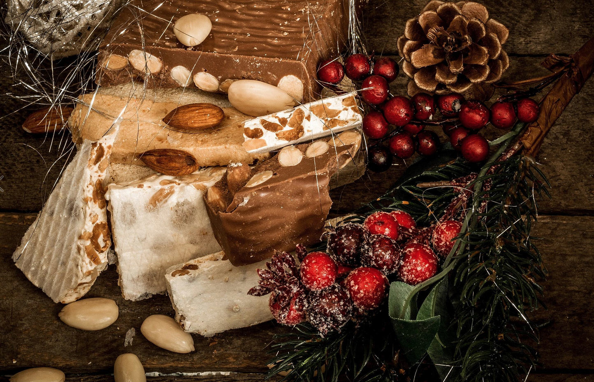
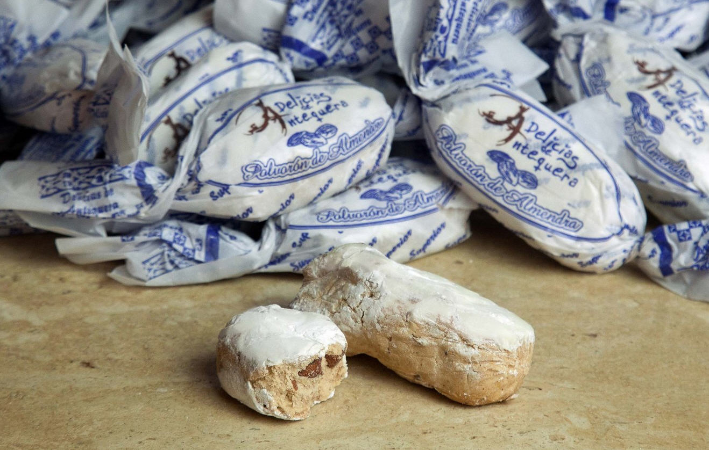
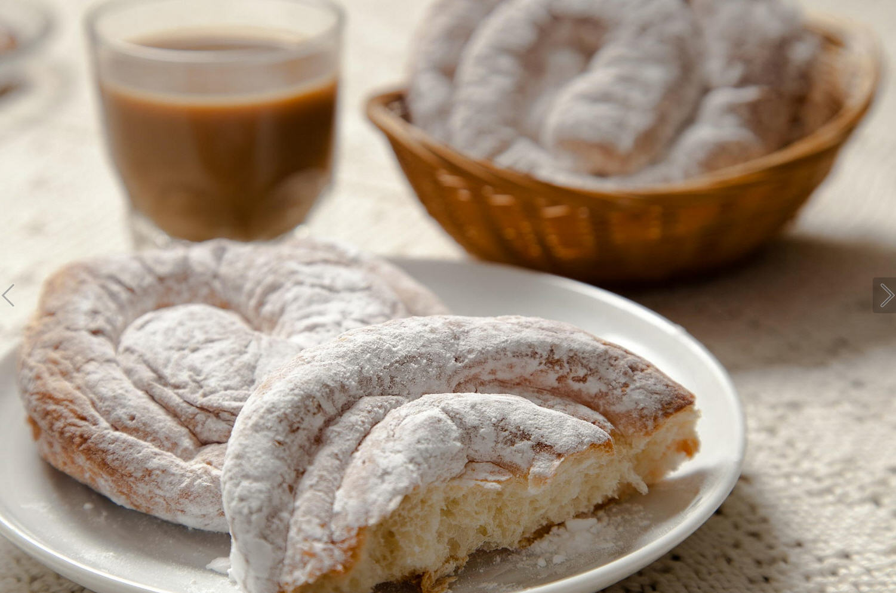
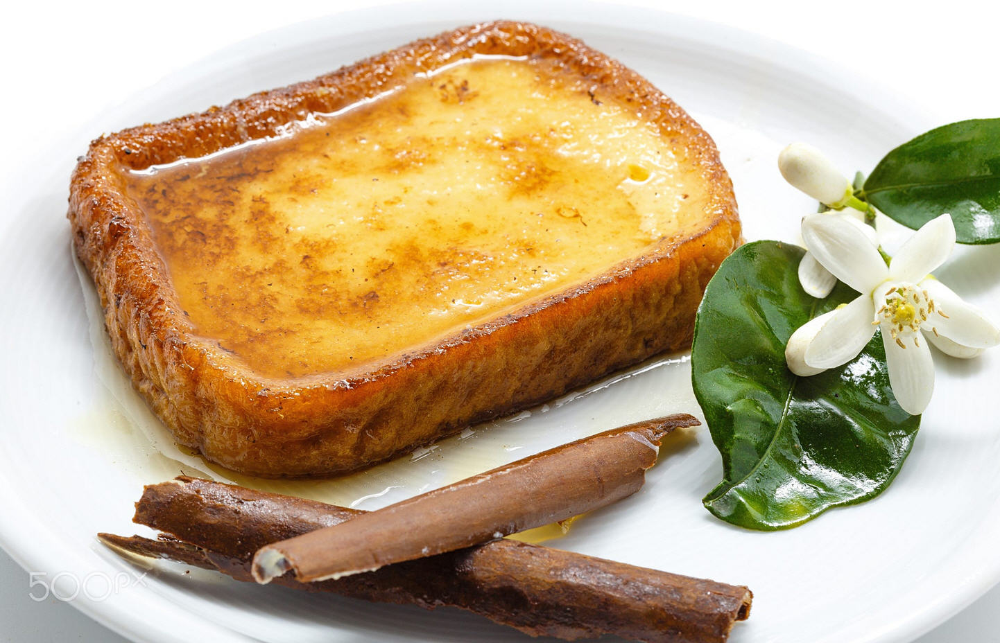

Сегодняшняя статья посвящается настоящим сладкоежкам, ведь речь пойдёт о национальных испанских сладостях. Испания смело может похвастаться большим количеством национальных десертов и других вкусностей. Но как же не потеряться среди всего этого широкого разнообразия сладкого и, не переусердствуя с нежелательными калориями, попробовать только самое-самое? Наша редакция подготовила для вас топ лучших испанских десертов.
Каталонский крем (Crema catalana)– этот десерт, как видно из его названия, является типичным для автономной области Каталония и представляет собой нежнейший сливочный крем с нотками ванили и аппетитной сахарной корочкой. Данное блюдо немного напоминает французское «крем-брюле», но отличается от своего соседа заменой используемых во Франции жирных сливок на менее жирное молоко. Кроме того, в состав «Крема каталана» входит сахар и яичный желток. История этого десерта уходит своими корнями в эпоху Средневековья, так как рецепт упоминается в кулинарных книгах XIV-XVI веков. В Каталонии можно встретить также йогурт и ликёры со вкусом «крема каталана».
Торт Сантьяго (Tarta de Santiago) – выпечка родом из Галисии, которую сегодня можно попробовать даже в самой маленькой деревушке этой автономии, в том числе и в поселениях, через которые проходит паломнический маршрут «Путь Святого Иакова», ведущий в Сантьяго де Компостелла. Первые упоминания об этом миндальном бисквите относятся к 1577 году. Процесс его приготовления очень прост, а результат восхищает. В составе теста отсутствует мука, её полностью заменяет молотый миндаль, благодаря чему выпечка приобретает насыщенный миндальный вкус и аромат. Кроме того, в тарта де Сантьяго добавляют корицу и цедру лимона, а сверху присыпают сахарной пудрой, оставляя не присыпанным участок, образующий форму креста. Кстати говоря, украшать этот торт символикой креста начали уже в XX веке, и это нововведение быстро приобрело популярность, став настоящим символом ароматной выпечки севера Испании.
Хворост с шоколадом (Churros con chocolate) - это типично испанская сладость, представляющая собой жареный хворост (наиболее приближенный вариант этой выпечки к странам Восточной Европы) вприкуску с горячим шоколадом. Хворост готовится из пшеничной муки, подсолнечного масла и соли, он обжаривается в кипящем масле и прекрасно контрастирует по вкусу с густым горячим шоколадом. На севере Испании этот десерт, ассоциирующийся у местных жителей с приближением Рождественских и новогодних праздников, принято кушать в холодные месяцы на завтрак или полдник. На юге страны чуррос едят на завтрак круглый год. А среди испанской молодежи эта сладость прочно ассоциируется с концом бурной вечеринки, после которой, в 7 утра, все идут есть чуррос в ближаюшую кафетерию.
Королевский кулич (Roscon de Reyes) – это испанская сладкая выпечка в форме тороида (большого бублика, круглой формы, с дыркой в центре), украшенная цукатами или шоколадом. Этот своеобразный кулич принято кушать в период новогодних и рождественских праздников. Согласно некоторым источникам, эта выпечка пришла к нам ещё из эпохи древних римлян, у которых она была приурочена к празднику Сатурна, отсюда и форма сладости. Некоторые историки гастрономии связывают форму выпечки с рождественским венком, которыми украшают дома в период зимних праздников. Как бы там ни было, сегодня поедание Roscón de Reyes является уже своеобразной забавой, ведь внутрь этого сладкого пирога кладут небольшой сюрприз и каждый поедающий его надеется, что подарочек окажется именно в его кусочке. Хотя, этот обычай меняется, в зависимости от региона Испании. Так, если в одних частях страны найти сюрприз считается престижным, в других это означает, что нашедший оплачивает выпечку в этом или следующем году.
Туррон (Turron) – ещё одно испанское лакомство, символизирующее Рождество. Ведь именно в этот период в продаже появляются сотни вариаций вкуснейшего десерта . Изначально туррон – это сладкая масса, изготовленная из смеси мёда (или сахара) и миндаля. Родиной туррона считаются провинции Валенсии и Аликанте и именно в этой части Испании, на сегодняшний день, существует самое крупное производство туррона. Миндаль может быть как цельный, так и молотый, а сама сладкая масса может быть изготовлена с добавлением марципана, шоколада, нуги и других ингредиентов. Принято считать, что появлением здесь различных вариантов сладостей на основе миндаля, испанцы обязаны арабам, которые долгое время властвовали на территории нынешней Испании и внесли весомый вклад в местную гастрономию.
Песочное печенье (Polvoron) – очередная рождественская сладость. Это печенье, небольшого размера, изготавливаемое на базе смеси из муки, сахара и большого количества сливочного масла. Печенье выпекается при высоких температурах, что позволяет получить румяную корочку снаружи и очень рассыпчатую и нежную середину. Областью производства наибольшего количества польворонес в Испании считается Андалусия. В базовую смесь ингредиентов добавляют также миндаль, корицу, цедру лимона и другие вкусовые акценты. Польворон, так же, как и туррон, занимает особое место на сладком столе каждого уважающего себя испанца в течение всех зимних праздников.
Энсаймада с Майорки (Ensaimada de Mallorca) – название этой сладости говорит о месте её происхождения. Энсаймада является настоящим символом острова Майорка. Это выпечка в форме улитки, из очень нежного, немного слоёного теста, непременно приспанная сверху сахарной пудрой. Название выпечки имеет арабские корни, «сайм» в переводе с арабского означает «жир». В тесто для энсаймады добавляется большое количество свиного жира, что позволяет сделать её безумно нежной, при этом, конечно же, и калорийной. Предположительно, энсаймада на Майорке начала повсеместно выпекаться примерно с XVII века и эти старинные рецепты бережно оберегаются местными жителями. Внутрь выпечки добавляется нежный крем или тыквенное варенье, но также существует вариант и без добавок. Сегодня каждый уважающий себя турист обязательно покупает в качестве вкусного сувенира с Майорки коробочку с энсаймадой.
Торриха (Torrija) – дословный перевод этой сладости – «Ломтик». Действительно, это ломтики не очень свежего хлеба, хорошо вымоченные в молоке или вине, обжаренные в кляре на сильном огне в большом количестве масла, сдобренные мёдом, сахаром и корицей. Торрихас принято кушать в период поста, а также во время Пасхальной недели. В Испании это угощение появилось в XV веке и плотно осело в местной кулинарии, став одним из любимых десертов на завтрак, полдник или просто в компании с чашечкой кофе.